Hong Kong
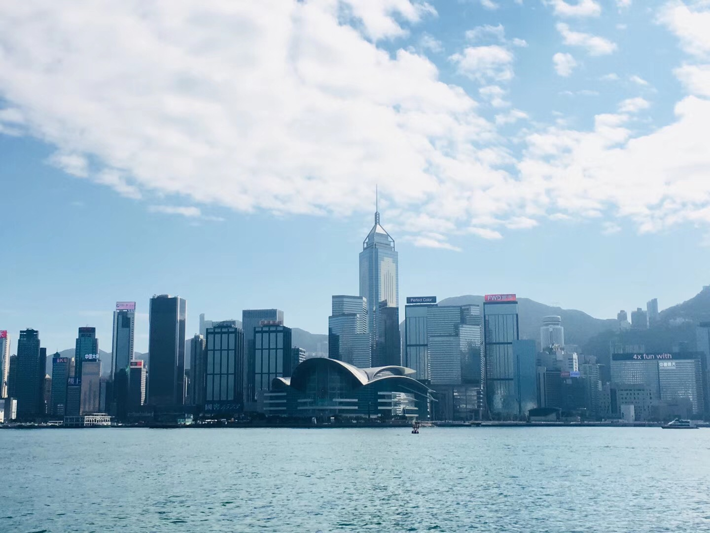
Victoria Harbour
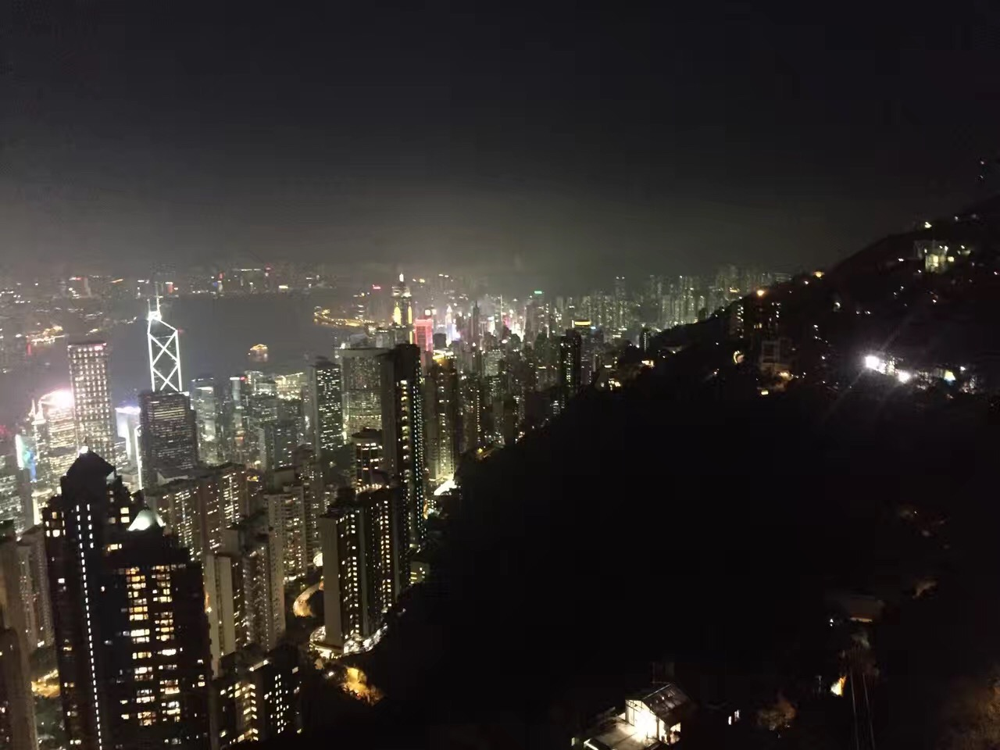
Night View on Victoria Peak
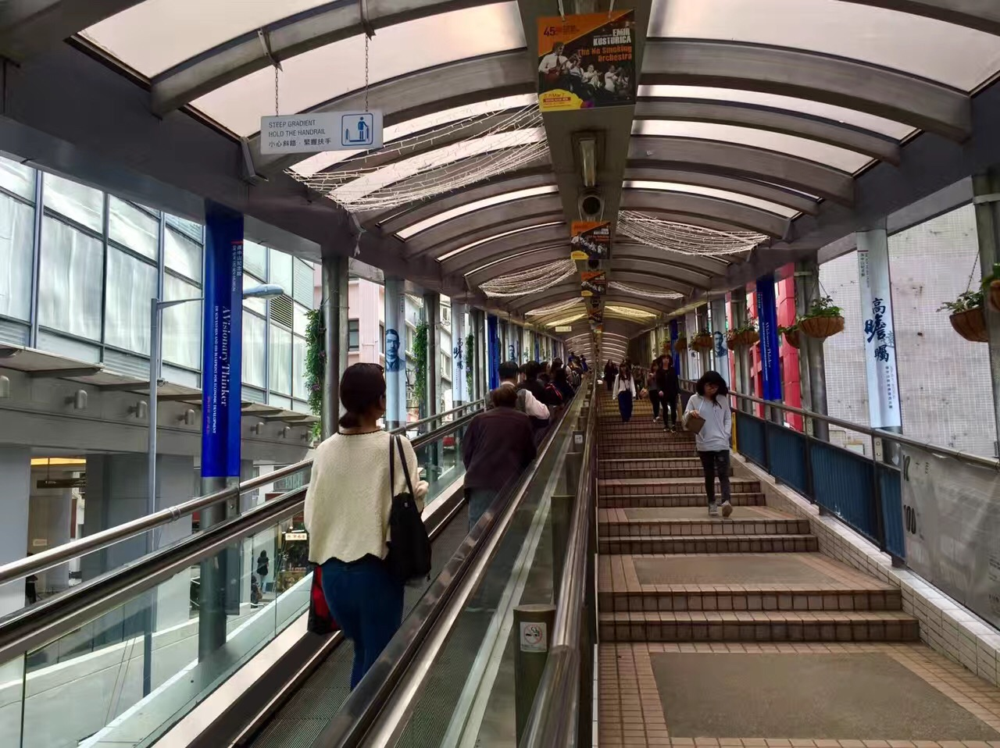
Central-Mid-levels Escalator - the longest outdoor covered escalator system in the world
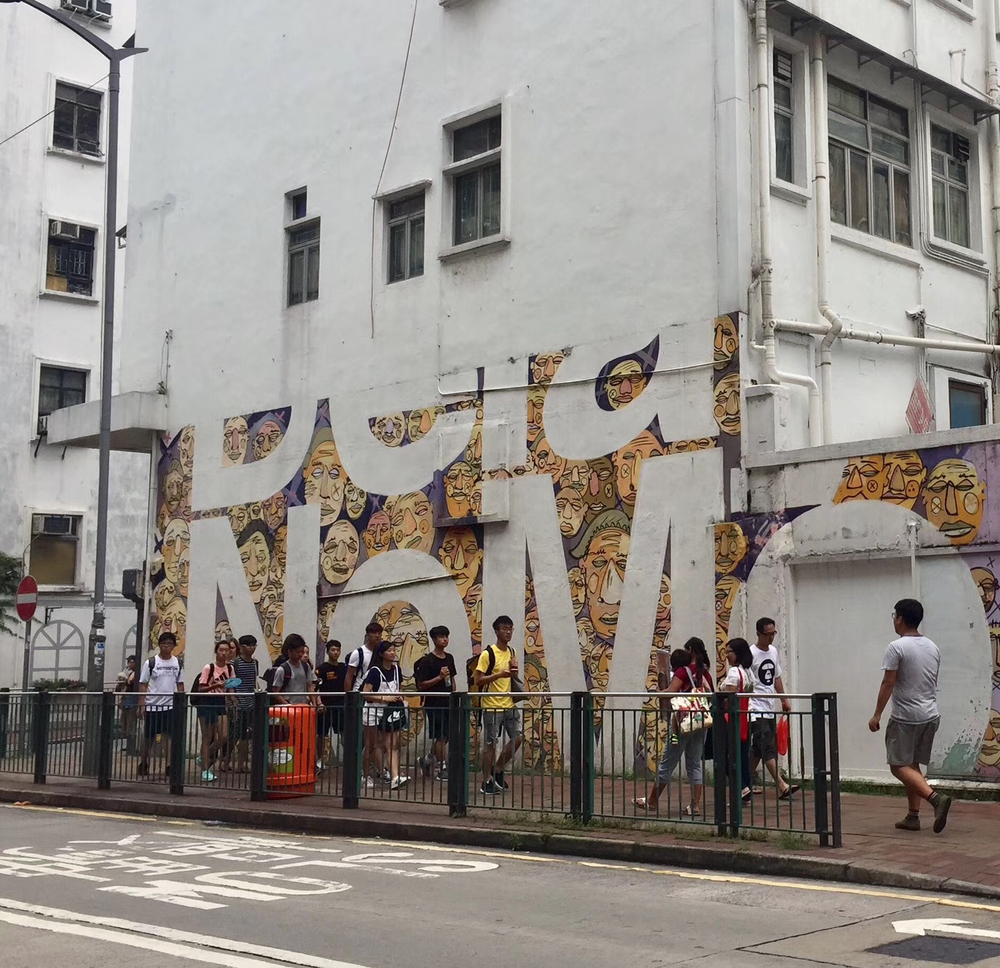
Graffiti
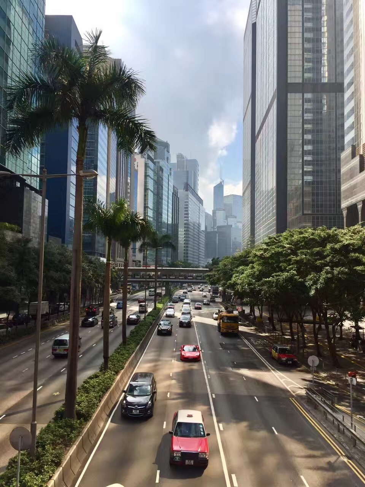
The central business district
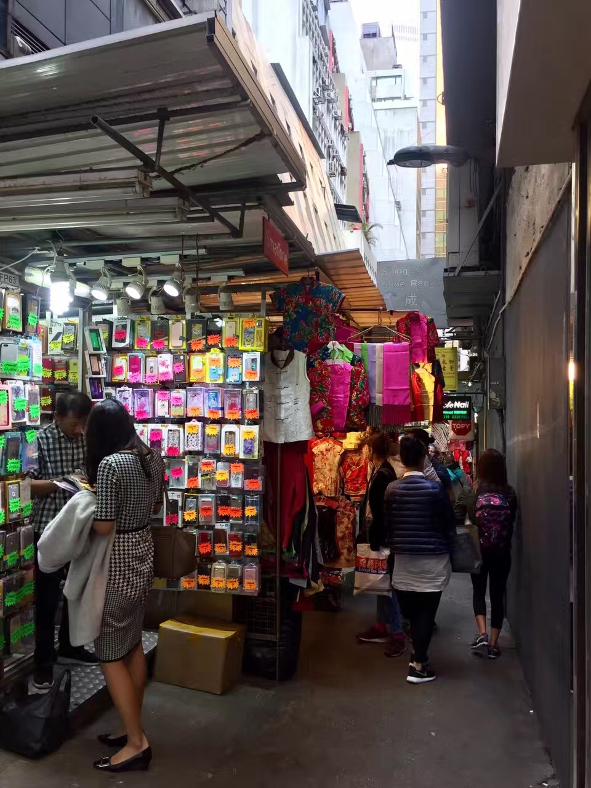
Small shops between two mansions
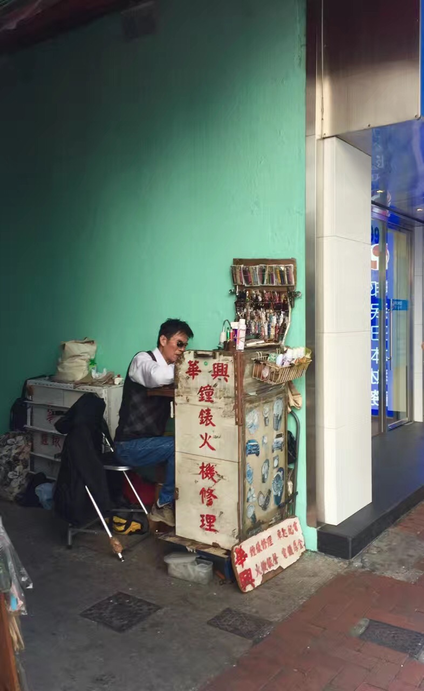
Clock and watch repair shop in an alley
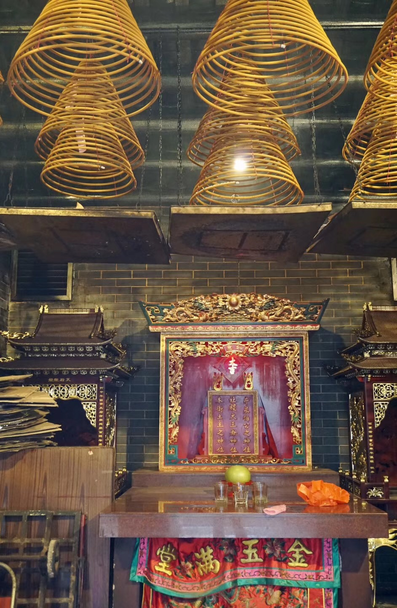
Matsu Temple - It is dedicated to Matsu, the Chinese goddess of the sea who is said to protect fishermen and sailors
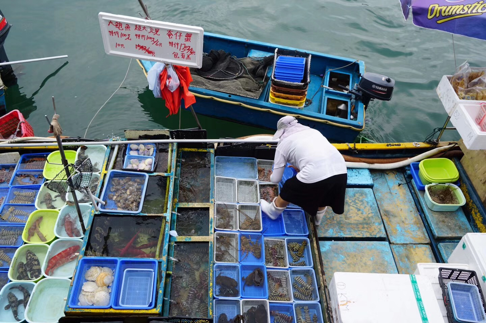
Live fish market on boats(1)
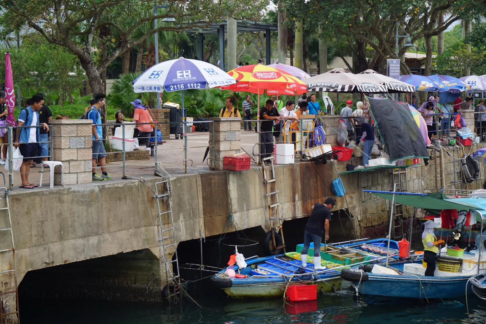
Live fish market on boats(2)
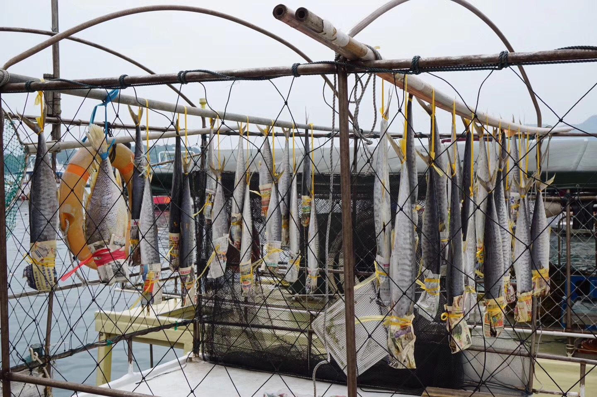
Dried and salted fish on boats